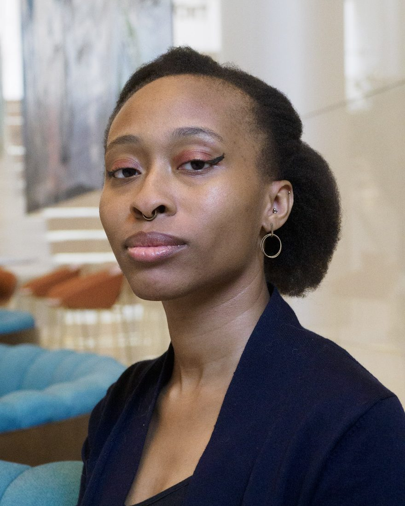

2018 — 2020
MA, Mass Communication
Valenti School of Communication, University of Houston
Internal communications and change
Seven years and counting, turning complex organizational change into messages people actually read. Internal communication programs, employee engagement, and the careful work of saying a hard thing well.

I partner with organizations across industries and countries to build internal communication programs, lead change initiatives, and develop employee engagement strategies. I navigate dense subject matter and conversational content with the same confidence, balancing a creative instinct with an organized, analytical approach.
Much of that has been at the hard end: retirement plans, total rewards, pay transparency, corporate transactions. Messages nobody wants to open, sent to tens of thousands of people who have to act on them. The subject matter changes from client to client. The problem rarely does.
— Present
Atelier Actara
Houston, TX
Fashion show management platform. Two-person founding team.
—
Aon
Houston, TX
Client-facing change and employee communication at enterprise scale.
—
Advanced Diagnostics Healthcare System
Houston, TX
—
Valenti School of Communication
Houston, TX
—
Glass Mountain Literary Journal
Houston, TX
A national distribution network
Field research, five sites
The company was reviewing its total rewards to find out whether employees were actually using the programs it paid for. I traveled to five sites and ran group interviews, ten to twenty people at a time, asking what they understood about the insurance and benefits available to them.
Nearly everyone I spoke to was unwired: warehouse staff with no day-to-day computer access. The programs were technically available to them. They were not practically available. Hours were variable, the language around insurance and employee programs took real effort to get into, and learning about any of it meant giving up unpaid personal time while acting on it meant stopping work on a floor where the job is to keep moving.
Employees who went looking anyway tended to meet long hold times, and more confusion at the end of them, which is not something a warehouse shift accommodates. Some had given up. Others, mostly younger, had decided against coverage without ever having had anyone on site to talk it through with. The ones who did know the programs had specific, well-aimed critiques, and those went back to the employer.
An HR presence at every site would have addressed much of it, and was never going to be funded. So the recommendations went to what could change: how information reached people in the first place, and through which channels for which part of the workforce.
The review had been framed as a question about take-up. What the fieldwork showed was take-up sitting downstream of friction, in a benefits process built for a working day that warehouse staff did not have.
Summary Field research with frontline populations, audience segmentation, and recommendations scoped to what the organization could realistically do.
Atelier Actara
Co-founder, communications
I am one of two founders. My co-founder builds the product. I own everything the company says.
The product existed before the voice did, and the copy that was there had been written to fill space rather than to say anything consistent. I worked through what was there and rebuilt it against a defined voice: what the company sounds like, what it does not, and the rules that hold once other people start writing.
I also run the external channels and write the product and user-facing copy, which means the standards get tested against real output every week rather than sitting in a document nobody opens.
Summary Messaging and voice from zero, editorial standards written to survive other authors, and communications owned at founder level rather than delivered to a brief.
A multinational financial services firm
Employee sentiment
I designed and ran interviews across the leadership team, then synthesized the responses into something the executive sponsor could act on.
The first read-out did not land the way it needed to. At the level of detail the interviews produced, it pulled the conversation toward individual points rather than the decisions in front of the team.
So I rebuilt it: themes and their implications rather than a transcript-level account, pitched at the altitude the sponsor worked at and framed around what the business could do next.
Summary Interview design and synthesis, executive stakeholder management, and the judgment to recognize when findings are being heard as a list rather than a direction.
2018 — 2020
Valenti School of Communication, University of Houston
2014 — 2017
Valenti School of Communication, University of Houston
Minor in Psychology Cum Laude
I work on internal communication programs, change initiatives and employee engagement, and I am always glad to talk about that work. The fastest way to reach me is email.